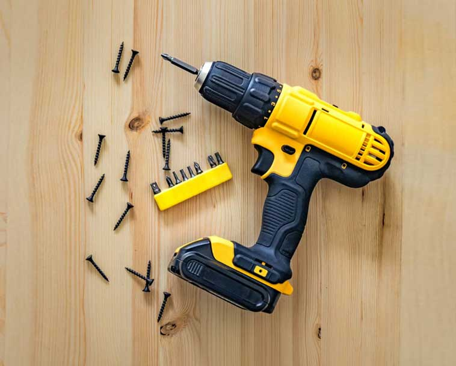

AVID POWER 20V MAX Lithium lon Cordless Drill Set, Power Drill
Kit with Battery and Charger, 3/8-Inch Keyless Chuck
Price: $37.39
- [Multifunctional Battery Pack] : 20V 1.5Ah Lithium-ion battery pack with USB output compatible for phone charging and real-time capacity indicator.
- [15+1 Position Clutch] : 15+1 torque (280 In-lbs) settings provide precise control for driving in/out screws to prevent stripping, and drilling into wood,
- Ceramics, plastics, and even metal with ease. Max torque for drilling into wood 13/16-Inch(20mm) or steel plate 3/8-Inch (10mm).
- [Ergonomic Design] : Compact and lightweight design with superior motor minimize fatigue in most daily screwing and drilling tasks, the rubber-covered handle provides a comfortable grip for being breezily operated in one hand.
- FRUSTRATION-FREE PACKAGING: Ships in Certified Frustration-Free Packaging for easy access to batteries
- Products with electrical plugs are designed for use in the US. Outlets and voltage differ internationally and this product may require an adapter or converter for use in your destination. Please check compatibility before purchasing.
Add to Cart
Add to List